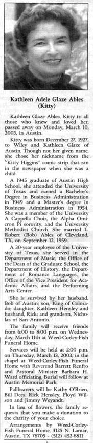

Kathleen Adele Glaze Ables (Kitty) was honored March 21 by flying flags at half-mast on the South Mall.
Friends and family said the beautiful, warm first day of Spring perfectly matched her sunny disposition. A long-time male friend of Kitty and her husband wrote that she "was one of the most beautiful and vivacious girls I have ever known and possessed one of the sharpest wits in existence." A female UT retiree wrote that Kitty was "a marvelous piano player who could play everything," and that she was a "very sweet, spicy, interesting, intelligent lady, and I will miss my friend."
The following unpublished first-person account
of Charles Whitman's murders from the top of the Tower of
the

Photo by Gerda "Jeff" McKern